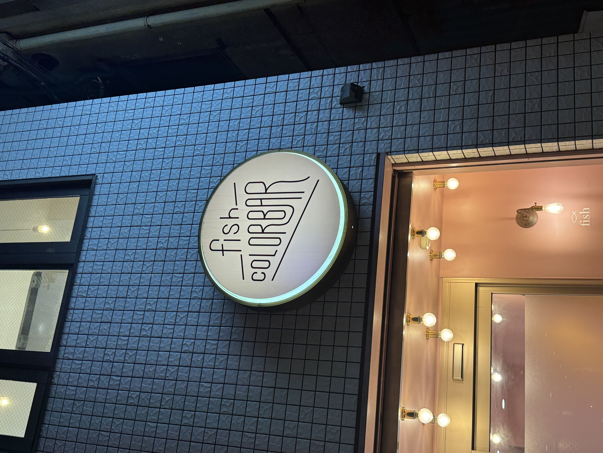
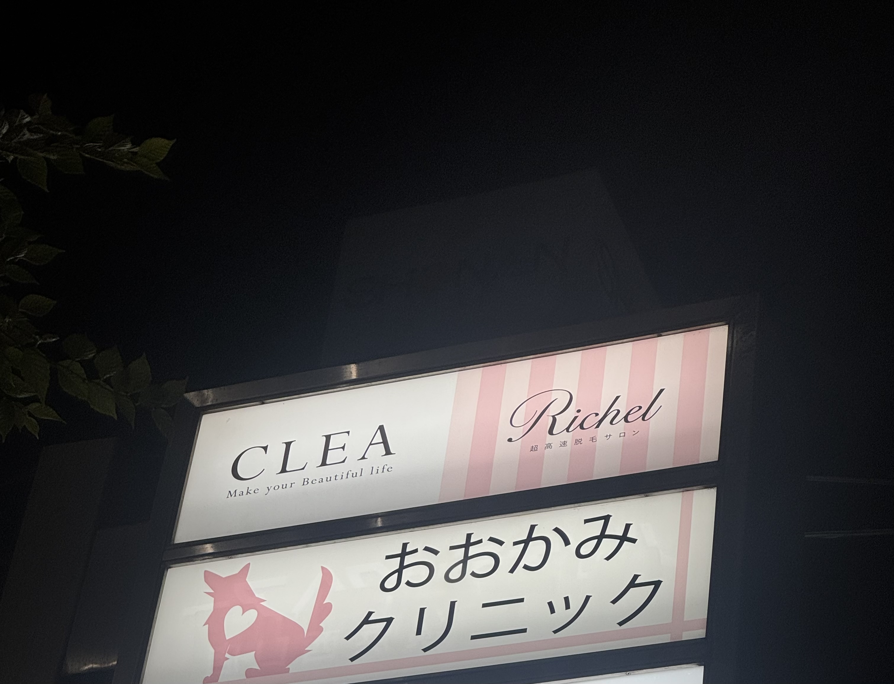
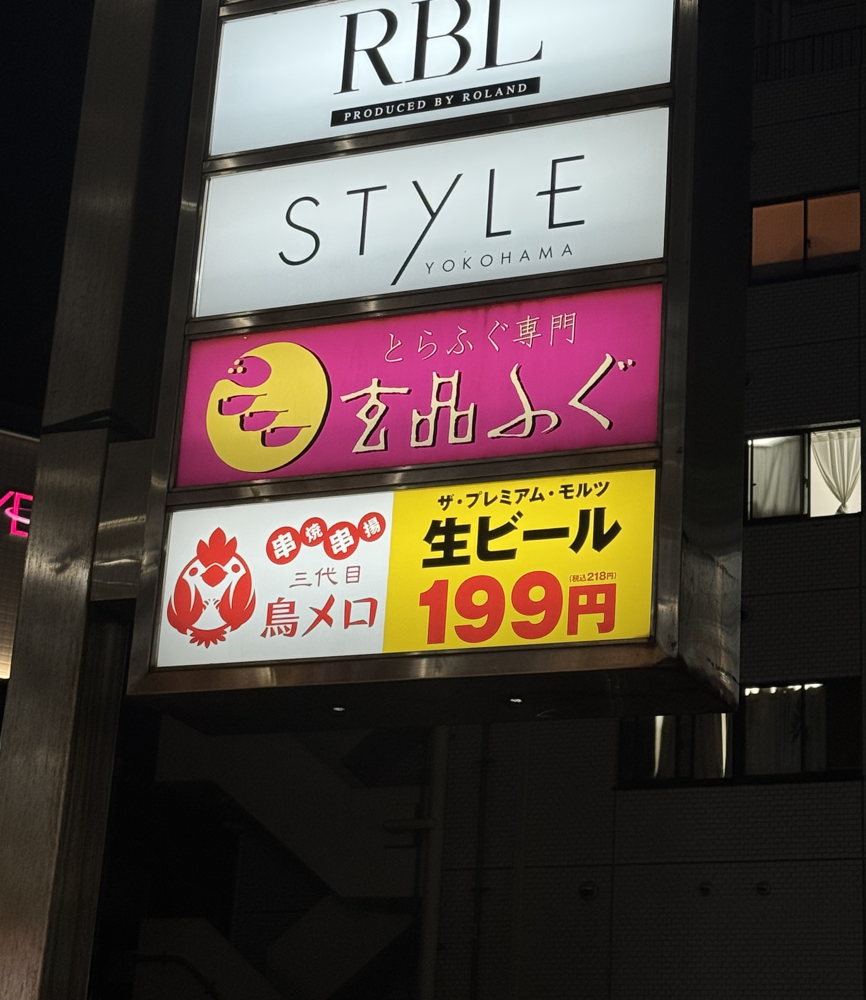

撮影日：2026年10月13日
撮影場所：横浜駅周辺
撮影者：芝田

fishは英語で魚を意味するが実際には美容院の看板に使われている。魚とは直接関係がないのにこの言葉が使われている意外性があって店名の意味を考えたくなる点が興味深い。また独特な文字のデザインも印象に残る。

おおかみという動物の名前が使われており、薄いピンク色のイラストが描かれている。クリニックという医療機関の名前に動物が使われている意外性があり、ハートのマークも組み合わされていることで親しみやすい印象を受ける

濃いピンク色の背景に黄色いふぐのイラストが描かれていて個性的な文字で表現されている。また玄品という漢字とふぐというひらがなが組み合わされている点にも特徴がある。文字だけでなくイラストも使うことでふぐ料理を扱うお店だと伝わりやすくなっている。
看板は店名を伝えるだけでなく色や文字、イラストの使い方によって見る人にさまざまな印象を与えることが分かった。また言葉の意味とお店の種類が異なる場合には意外性が生まれ、反対にイラストや色を工夫することでお店の特徴を分かりやすく伝えられることにも気づいた。